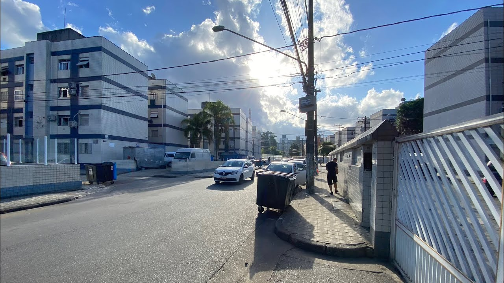

Gabriel Santana Dias
Olá, meu nome é Gabriel Santana Dias, sou natural de santos e possuo vários interesses em programação!
Meus Hobbies:
- Programar
- Treinar
- Praticar Esportes
- Ler livros
Imagens que me definem:

Curiosidades:
História de Santos
História do Charlie Brown JR
História do Santos Futebol Clube
Músicas do Charlie Brown Jr:
Mapa de Santos: